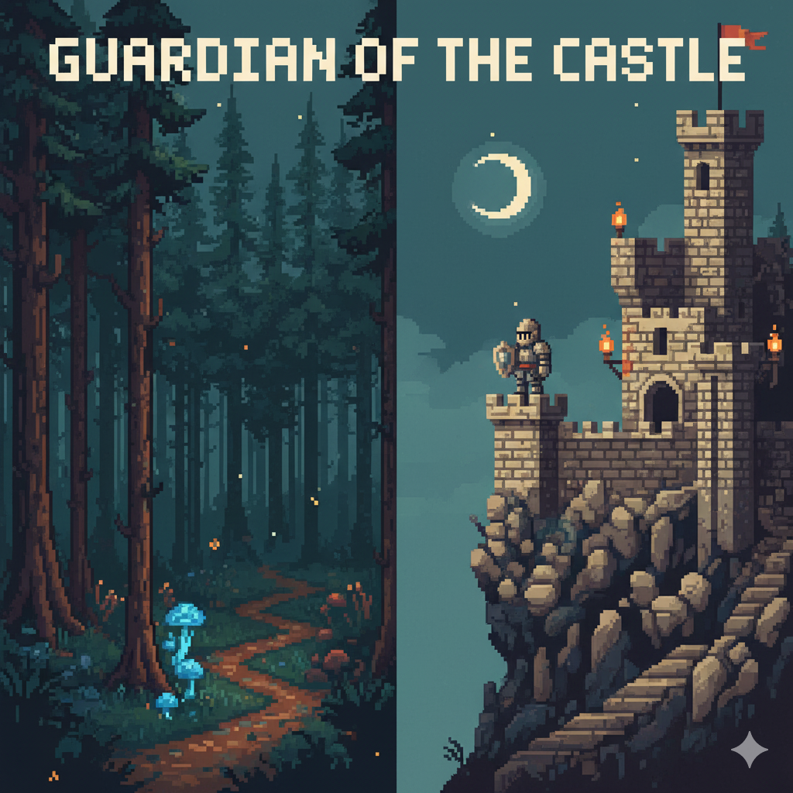
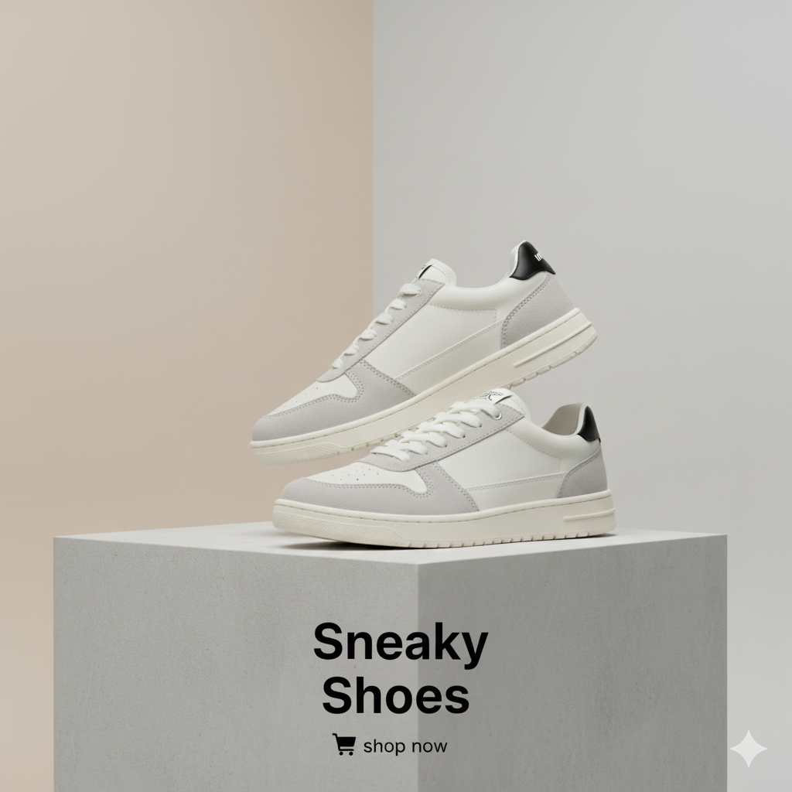
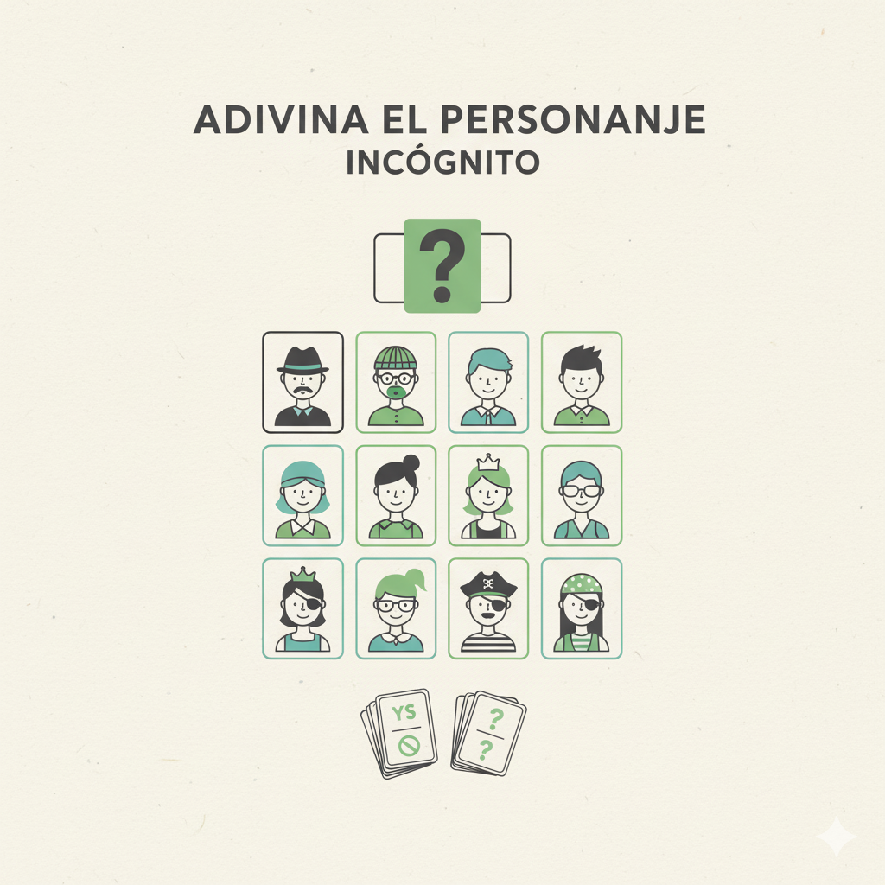
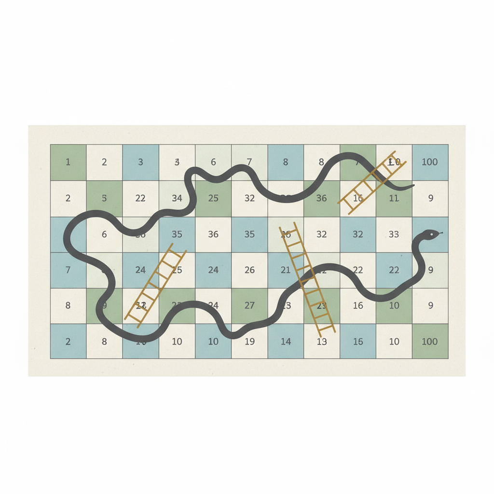

Estudiante avanzado de Informática y Desarrollo de Software, orientado principalmente al desarrollo backend. Me apasiona diseñar y construir sistemas sólidos, eficientes y escalables. Disfruto trabajar en equipo, compartir ideas y resolver problemas de forma colaborativa. Mi motivación es crear soluciones innovadoras que conecten tecnología y propósito, manteniendo siempre una actitud de aprendizaje continuo y mejora constante.
Mi compromiso con el aprendizaje continuo y la excelencia profesional.
Más certificados serán añadidos pronto.
Desarrollo de chatbot médico para poder consultar, agendar o borrar medicamentos, agendar turnos del medico y consultar las farmacias mas cerca • Integración con APIs: Google Calendar para recordatorios y Geocoder para localización de farmacias.
Aplicacion Para crear editar leer y borrar tus propias tareas con prioridad, estado, fecha. Pudiendo crear carpetas y ordenar las tareas en base a la carpeta correspondiente. Implementando una arquitectura en capas

Guardian of the Castle es un desafiante juego de rol (RPG) 2D que sumerge al jugador en un oscuro y misterioso bosque. El objetivo es claro: luchar contra enemigos que acechan en las sombras, encontrar la llave oculta para acceder a un castillo imponente y derrotar al jefe final que lo custodia. Este proyecto combina un combate dinámico con una progresión de personaje por medio de mejoras instantáneas, ofreciendo una experiencia de juego gratificante y orientada a la acción.
Aplicacion de E-commerce de zapatillas de todo tipo, donde se incluyen filtros, barra de busqueda, diseños responsivos con UX/UI, implementando tambien un carrito de compras.


Desarrollo de juego interactivo donde mediante preguntas se debe adivinar el personaje incognito con solo 3 intentos, mientras la aplicacion trata de adivinar el tuyo. Implementación de interfaz gráfica con Swing para mejor experiencia de usuario y ademas un Diseño de lógica de juego para adivinanza de personajes

Desarrollo del clásico juego aplicando paradigma de programación funcional. Implementación de algoritmos para gestión de tablero y reglas del juego